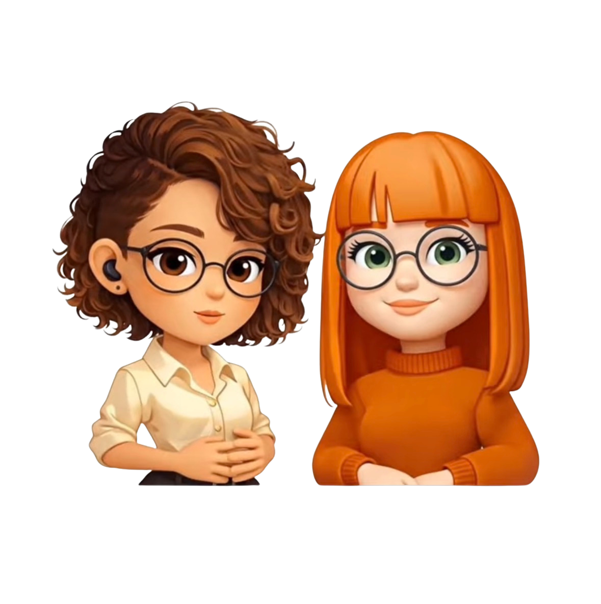

Bem vido a nossa experiência em AR! O móvel nascerá no centro da palma, utilize o polegar e o indicador para controlar a escala!
🦋 Bem-vindo ao nosso cartão visita

O Móveis Pro-AR é uma experiência em Realidade Aumentada que permite visualizar móveis em 3D no seu ambiente real,
direto pelo navegador. Com poucos toques, você posiciona, ajusta o tamanho e explora o modelo no espaço,
facilitando a decisão de compra e ajudando a imaginar como o móvel vai ficar antes de escolher.